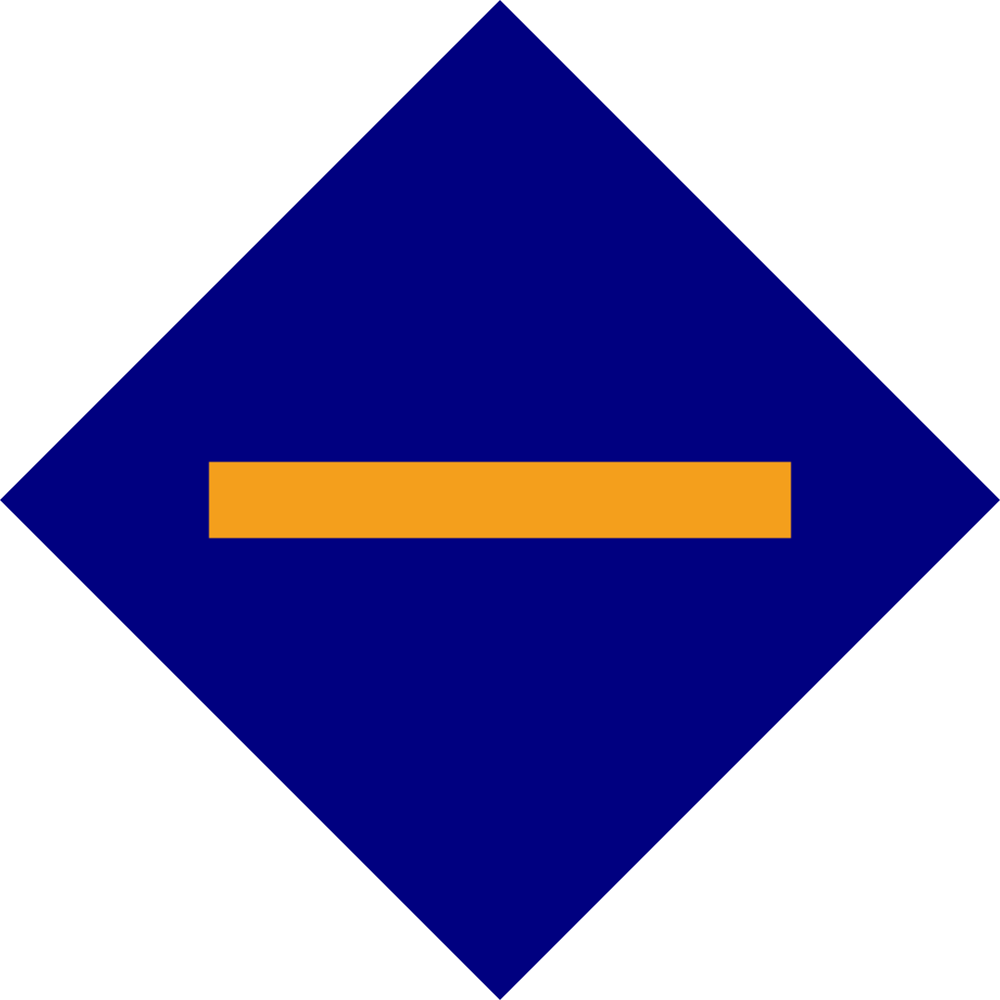

Ticker: STR8 | Pool-ID: 000006d97fd0415d2dafdbb8b782717a3d3ff32f865792b8df7ddd00 | 4% tarifa efectiva | Perfil Pooltool.io
"La única vez que debes mirar hacia atrás es para ver qué tan lejos ha llegado."
El "Cardano Straight ADA Stakepool" tiene como objetivo proteger la red Cardano mediante la ejecución de un stake pool competitivo las 24 horas del día, los 7 días de la semana, en una infraestructura descentralizada mantenida por profesionales de tecnología informática. Las tarifas bajas aseguran la longevidad y sostenibilidad de nuestro stake pool, no hay otro propósito. De ahí viene el nombre de nuestro stake pool. La intención de este stake pool es proporcionar un servicio confiable de infraestructura / protocolo de Cardano con una alta conveniencia para usted como delegador.
STR8 pool aprecia mucho a cualquiera que ya nos delegue o planee hacerlo. ¡Haremos todo lo posible para ayudarte obtener las recompensas que te mereces por ser uno de los primeros en adoptar Cardano! Es libre de riesgos delegar su participación. Considera delegar en STR8 hoy para ganar recompensas!Soy Chris, un profesional de tecnología informática Alemán con muchos años de experiencia en ciencia en computación. Soy un entusiasta de Cardano y embajador de Cardano.
Ejecutar y mantener servidores es solo un pasatiempo mío, pero me involucro de esta manera con varias comunidades en las que veo valor. Aporto muchos años de experiencia en el mantenimiento de servidores basados en Linux. Para mí, mantener un stake pool es más divertido que un desafío serio.
Si tiene alguna pregunta o inquietud sobre este grupo, puedes encontrarme en Telegram con el nombre @ChrisSTR8 en todos los canales relevantes de Cardano.
Como una persona técnica, me atrajo Cardano en 2017 a través del video de pizarron de Charles Hoskinson y he seguido el protocolo desde entonces, viendo AMA y similares casi todos los días de camino al trabajo y de regreso.
Veo mucho potencial en Cardano debido a su fuerte visión y proceso metódico, por lo que estoy muy feliz de brindar el servicio de administrar un stake pool confiable para la comunidad que fomenta el crecimiento y la fortaleza de la red.
El grupo funciona con tres servidores privados virtuales redundantes y confiables, un productor de bloques y dos relés distribuidos en diferentes centros de datos en Europa / Alemania y Asia / Singapur. Con esta configuración redundante, el grupo STR8 nunca pierde un bloque, incluso durante las ventanas de mantenimiento.
Todos los nodos se ejecutan en un sistema operativo de servidor seguro y moderno con amplios recursos de hardware y un fuerte emparejamiento con opciones de escalado fáciles para satisfacer las crecientes demandas.
No quiero aburrirlo con datos elaborados de monitoreo en tiempo real de este stake pool, puedes esperar que el stake pool funcione para usted las 24 horas del día, los 7 días de la semana.
Dirijo este grupo porque creo en el futuro de Cardano y quiero ser parte de la comunidad. Por esta razón, planeo mantener este grupo de forma indefinida. Haré todo lo posible para que el stake pool funcione de la mejor manera posible.
Participo activamente en el grupo de Telegram del grupo de trabajo de mejores prácticas de Cardano Shelley Testnet y StakePool para ayudar a hacer crecer la comunidad e implementar todas las mejores prácticas para este grupo y desarrollar nuevas mejores prácticas a lo largo del camino.
Mi esperanza es que mi grupo sea muy atractivo para usted como delegador. Me comprometo a mantener este grupo de forma indefinida con tarifas razonables pero bajas. Soy un profesional de tecnología informática, por lo que puede estar seguro de que siempre tengo implementadas todas las mejores prácticas.
El margen de beneficio del grupo es efectivamente solo el 4% de su recompensa, usted se queda con el 96% de su recompensa. Tenga en cuenta que estamos hablando de recompensa, no de su cantidad apostada. STR8 aplica una tarifa variable dinámica para eludir la tarifa obligatoria fija de 340 ADA por época.
No subiré repentinamente mis tarifas variables por encima del 4% como lo harán eventualmente otros grupos que comienzan con estructuras de tarifas insostenibles. Como delegador quiero darte tranquilidad al delegar en mi grupo.
No estoy de acuerdo con tomar una tarifa fija de 340 ADA independientemente de la cantidad de bloques que STR8 pool produzca. Mi razón es la solidaridad contigo, mi muy apreciado delegador. Al confiar solo en el margen de beneficio, compartimos el riesgo. Creo en Cardano y estamos juntos en esto. El grupo STR8 comparte los días buenos y malos con sus delegadores confiando únicamente en la tarifa variable. Para ejecutar un grupo único y sostenible, STR8 requiere solo ~ 4.0% de la tarifa efectiva.
Siempre que haya una tarifa fija obligatoria de 340 ADA, el grupo STR8 utiliza una tarifa variable del 3.00%. En caso de que la participación total caiga por debajo de los 5 millones de ADA, el grupo STR8 volverá a entrar en modo bootstrap, reduciendo la tarifa variable al 0,00%. En caso de que se elimine la bandera obligatoria de tarifa fija en el futuro, el grupo STR8 reduzca la tarifa fija a 0 ADA y aumente la tarifa variable al 4,00%.
La siguiente tabla muestra de forma transparente los efectos de las tarifas en función de la participación total. Todas las recompensas son por época:
| Observación | ADA apostada [₳] | Tarifa variable [%] | Cuota fija [₳] | Tarifa efectiva [%] | Costo efectivo [%] | Recompensas del delegador [₳] *) |
|---|---|---|---|---|---|---|
| ~ saturación d = 1000 | 32,000,000 | 3.00% | 340 | 4.49% | 0.23% | 68 |
| 35,000,000 | 3.00% | 340 | 4.36% | 0.23% | 68 | |
| 40,000,000 | 3.00% | 340 | 4.19% | 0.22% | 68 | |
| 45,000,000 | 3.00% | 340 | 4.06% | 0.21% | 68 | |
| 50,000,000 | 3.00% | 340 | 3.95% | 0.21% | 68 | |
| 55,000,000 | 3.00% | 340 | 3.87% | 0.20% | 68 | |
| 60,000,000 | 3.00% | 340 | 3.80% | 0.20% | 69 | |
| ~ saturación d = 500 | 64,000,000 | 3.00% | 340 | 3.75% | 0.19% | 69 |
(Si desea verificar las fórmulas detrás de esta tabla, no dude en ver la hoja de cálculo completa para el cálculo aquí. En la celda amarilla, puede ingresar su propia participación para actualizar las recompensas promedio del delegador.)
STR8 agrupa una tarifa de recompensa efectiva baja ~ 4% es en realidad un costo de 0.2% para los delegadores por año si el rendimiento de las ventas bruto esperado es 5.2%. Recuerde que las criptomonedas pueden fluctuar entre un 2% y un 10% por día, por lo que creo que STR8 tiene tarifas muy competitivas.
Las actualizaciones se publican en Twitter y en el grupo Telegram Straightpool.
Actualmente, no hay planes para configurar una lista de correo para delegadores, ya que es posible que la red principal de Shelley tenga algún tipo de mensajería de billetera en las billeteras oficiales, que le permite a el operador de el stake pool comunicar con los delegadores. Ya tenemos suficiente correo no deseado, me gustaría minimizar cualquier correo no deseado adicional al no contribuir a recopilar otra lista de correo propensa al abuso.
Directo en el sentido de, directo y directo de alta calidad, audio de alta calidad, sin trucos, simplemente funciona.
Este documento se actualizó por última vez el 14 de febrero de 2021